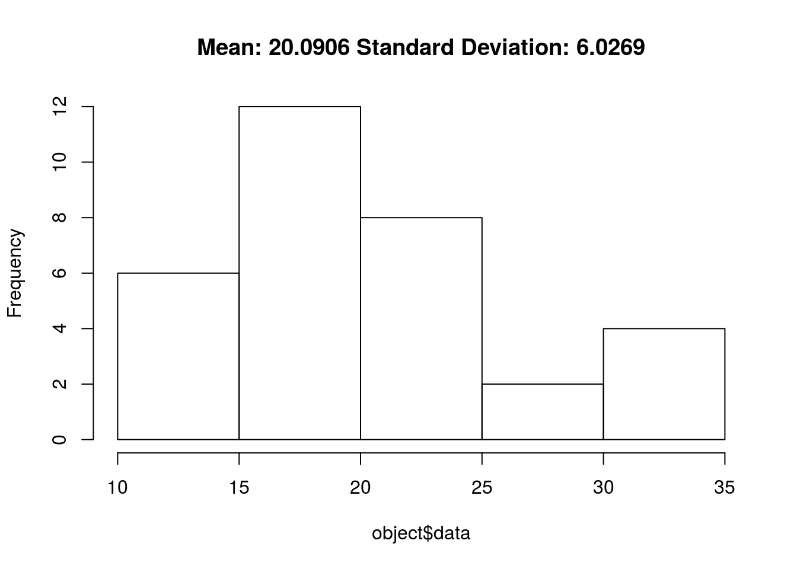

Sadly this is another post aimed at R users. Recently I’ve been looking into how to make my programming cleaner, one of the main ways of doing this is a method called Object Orientated Programming. It’s used by most of the functions in R for example look at the output from a linear model.
#Fit linear model
lm_cars <- lm(mpg~.,data=mtcars)
is.object(lm_cars)## [1] TRUEisS4(lm_cars)## [1] FALSEclass(lm_cars)## [1] "lm"So the first check in the example above checks if lm.cars is an object, the second check says if it’s particularly a S4 object. In the case of lm it’s a S3 object which has class “lm” which is the one I’ll be focusing on here. I’ll briefly highlight the difference between the two at the end of the blog post.
So why do we actually need objects, well it’s quite obvious when we return anything from a function we’d like to be able to define how that return is used. For example the actually lm function doesn’t just come alone, if you have a look at lm sourcecode. You’ll see that at the top an actual function called lm is returned; however, it also has some weird functions which I’ve never actually directly called like lm.plot, lm.print and so on, note lm.“something”. So how do we actually use these. When I run the code plot(lm) what R does is it first goes and finds what’s stored in class(lm.cars) then tries to find out if there’s any function that’s designed for that class. The way it does this is that it goes and searchs for functions labeled “class”.plot. as you’ve seen in the source code there is such a function so it just uses that.
How do you use it?
Okay so the example in this post I’m going to use a function that simply returns the mean and standard deviation of some data. It takes in data then gives out a list, a list is just like a vector but every element of the list can hold virtually any data structure in R, also you can name its’ elements. At the end of each code block I’ll print out the function output just to see how it changes each time.
mean_sd <- function(data){
output = list(m = mean(data), s = sd(data), data=data)
return(output)
}
ret <- mean_sd(mtcars$mpg)
is.object(ret)## [1] FALSE# Simply typing the variable name on its' own prints it
ret## $m
## [1] 20.09062
##
## $s
## [1] 6.026948
##
## $data
## [1] 21.0 21.0 22.8 21.4 18.7 18.1 14.3 24.4 22.8 19.2 17.8 16.4 17.3 15.2
## [15] 10.4 10.4 14.7 32.4 30.4 33.9 21.5 15.5 15.2 13.3 19.2 27.3 26.0 30.4
## [29] 15.8 19.7 15.0 21.4So I’ve ran the function and as you can see unlike lm it’s not an object. So lets just try assigning a class to the return just to see what happens:
#Adds a class to ret
class(ret) <-"mean_sd"
#TRUE means it's now an object
is.object(ret) ## [1] TRUEret## $m
## [1] 20.09062
##
## $s
## [1] 6.026948
##
## $data
## [1] 21.0 21.0 22.8 21.4 18.7 18.1 14.3 24.4 22.8 19.2 17.8 16.4 17.3 15.2
## [15] 10.4 10.4 14.7 32.4 30.4 33.9 21.5 15.5 15.2 13.3 19.2 27.3 26.0 30.4
## [29] 15.8 19.7 15.0 21.4
##
## attr(,"class")
## [1] "mean_sd"#print lm_cars to compare
lm_cars##
## Call:
## lm(formula = mpg ~ ., data = mtcars)
##
## Coefficients:
## (Intercept) cyl disp hp drat
## 12.30337 -0.11144 0.01334 -0.02148 0.78711
## wt qsec vs am gear
## -3.71530 0.82104 0.31776 2.52023 0.65541
## carb
## -0.19942Now, much like lm, meansd has a class with the name of the function which made it. The actual name isn’t important; however, its’ usually the function name. When we print lm_cars, it’s clear that the print is much clearer and actually displays the relevant information. So, lets make a function which does the same for our class:
print.mean_sd <- function(object, digits= max(3L, getOption("digits") - 3L)){
string <- paste("Mean:", round(object$m,digits))
print(string)
string2 <-paste("Standard Deviation:", round(object$s, digits))
print(string2)
#This function doesn't return anything so it's good practice to make it return a copy of the object
#just incase someone calls ret=print(ret) it will not change ret.
#invisible makes it so object wont be printed if it's not assigned
invisible(object)
}
print(ret) # Same output as ret## [1] "Mean: 20.0906"
## [1] "Standard Deviation: 6.0269"Lets summarize up by creating the mean_sd function the way it should have been made in the first place:
mean_sd <- function(data){
output = list(m = mean(data), s = sd(data), data=data)
return(output)
}
print.mean_sd <- function(object, digits= max(3L, getOption("digits") - 3L)){
string <- paste("Mean:", round(object$m,digits))
print(string)
string2 <-paste("Standard Deviation:", round(object$s, digits))
print(string2)
invisible(object)
}
plot.mean_sd <- function(object, digits= max(3L, getOption("digits") - 3L)){
title <- paste("Mean:", round(object$m,digits),"Standard Deviation:", round(object$s, digits))
hist(object$data, main=title)
invisible(object)
}Now run the example:
ret <- mean_sd(mtcars$mpg)
class(ret) <-"mean_sd"
plot(ret)
ret## [1] "Mean: 20.0906"
## [1] "Standard Deviation: 6.0269"Voila! The function now simply makes an object then functions that are associated with this object are used instead of the default ones.
These functions that are specifically made for a class are more correctly known as methods. Idea is you have an object and the methods can then update your objects elements. Hence the name of the function.
Why is it useful
Often I’m shocked when I go to use someone code, it’s often hard to navigate, they make a function then do all the analysis (i.e. plotting, summary statistics etc) in a main script outside of the function. The two main problems are:
- It’s hard to find the problematic code.
- Often they have 10 pieces of code repeated about 10 times. For example, Set a parameter; run the function; 5 lines associated with plotting.
So, now suppose their code is split up in a object orientated way. The first point can be solved by just running each individual method then quickly checking the output, or even better if the problem is with plotting you just check the plot function. Second point this is obviously solved you’ve reduced those repetive parts to 2-3 lines just calling relative methods. Furthermore if you fix one of those 5 lines of plotting you only change it in the actual method, rather than changing it all 10 times in the original messy code.
Another point is it hugely reduces how much you need to remember. Say you’re working without object orientated programming. If you’re using all these functions in R like lm, rf, anova, etc. and for each one you need to know the function name for plotting, summary of the output. That would quickly add up to thousands of function names.
Summary
I’ve only started using object orientated programming recently. I’ve desribed the main useful parts here, I notice that now my code is much neater. It does take a bit more effort to code up what you’re doing as you really need to think, but on the other hand I can come back to your code a month later and understand it very easily and know how to adapt it.